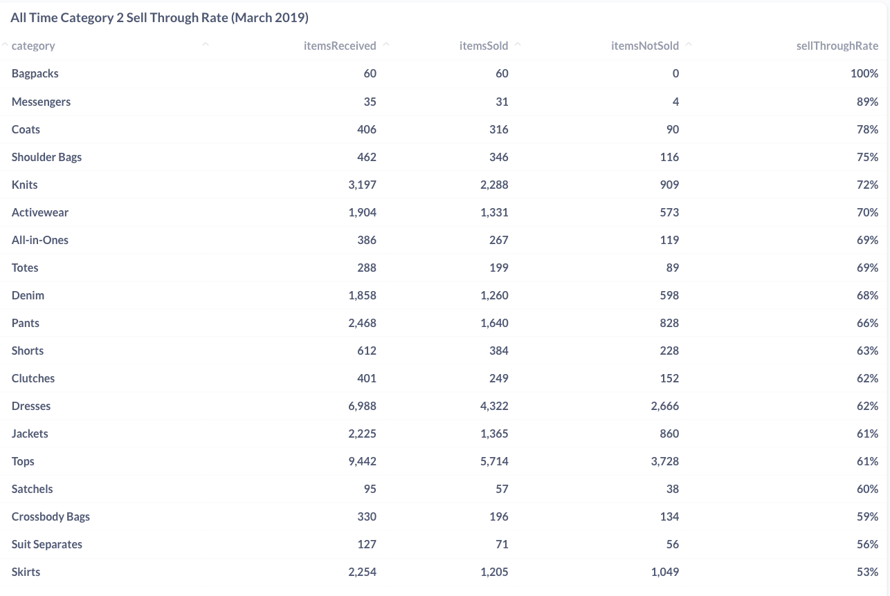
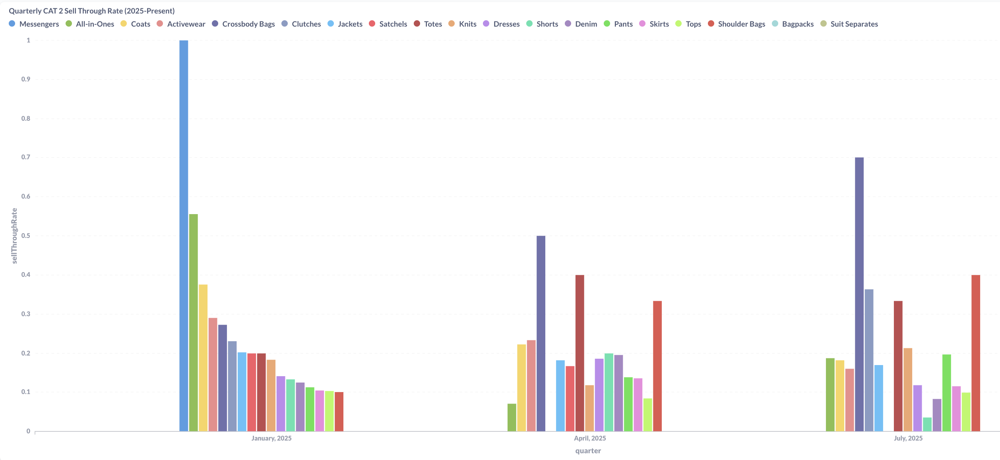
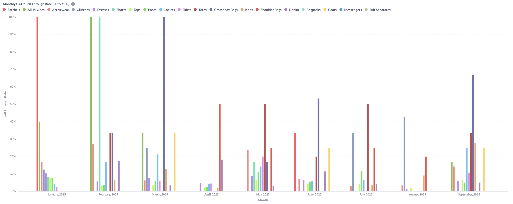
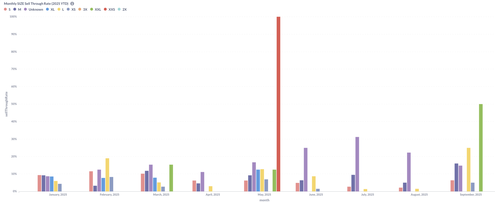
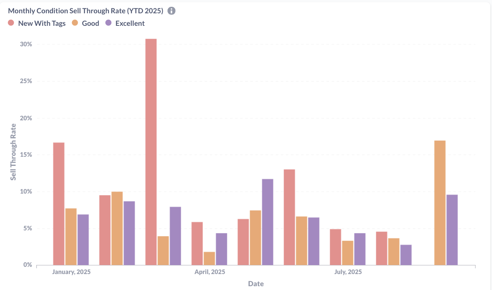
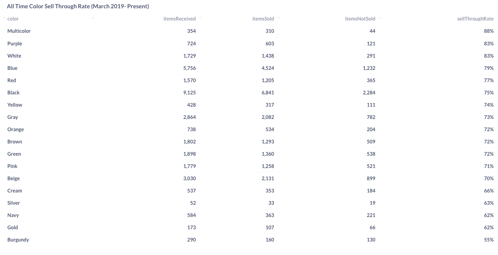
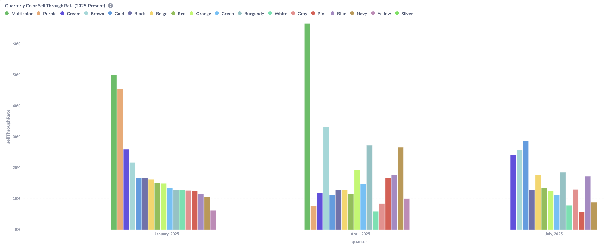
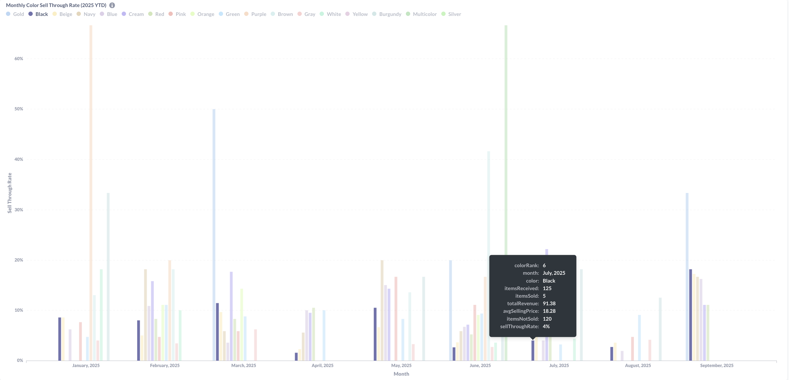

Inventory Performance Analytics
Business Context
This dashboard analyzes inventory performance across key product attributes to identify which categories, sizes, colors, and conditions sell most effectively. Understanding these patterns enables data-driven inventory curation, pricing optimization, and strategic buying decisions for the resale marketplace.
Key Analytics Dimensions
- Category performance (Handbags vs Clothing across different timeframes)
- Size distribution and sell-through rates by garment size
- Color performance with seasonal trends and pricing analysis
- Condition quality impact on sales velocity and pricing
Dashboard 1: Monthly Category Trends
Category Performance Analysis: Historical Patterns vs. Recent Trends
Category analysis reveals distinct performance tiers and significant shifts between historical preferences and recent marketplace activity across different timeframes.

All-Time Performance Hierarchy (March 2019-Present): Accessories categories lead lifetime performance with Bagpacks achieving perfect 100% sell-through (60 received, 60 sold) and Messengers at 89% (35 received, 31 sold). However, apparel categories dominate by volume, with Tops processing 9,442 items at 61% conversion and Dresses handling 6,988 items at 62% sell-through. This creates a clear volume-versus-efficiency divide where small accessories achieve near-perfect conversion while high-volume apparel maintains moderate but consistent performance.

Quarterly Trends (2025): Quarterly data shows dramatic seasonal shifts in category preferences. January 2025 featured Messengers dominating at nearly 100% conversion, while April 2025 shifted toward Crossbody Bags (~50%) and Satchels (~40%). July 2025 presents more diverse category distribution with Crossbody Bags maintaining strong performance (~70%) alongside increased apparel category presence. This quarterly volatility suggests seasonal demand patterns driving category preferences.

Monthly Performance Patterns (2025 YTD): Monthly analysis reveals extreme category volatility, with Crossbody Bags achieving 53% sell-through in June 2025 (15 received, 8 sold, $486.25 total revenue, $60.78 average price). The monthly view shows accessories appearing sporadically with high conversion rates but limited volume, while apparel categories maintain more consistent monthly presence despite lower individual performance rates.
Strategic Category Insights: - Accessory Seasonality: High-performing accessories show concentrated seasonal demand rather than consistent year-round appeal - Volume vs. Revenue Trade-off: High-volume apparel generates steady activity while low-volume accessories command premium pricing - Quarterly Planning: Category performance shifts dramatically between quarters, requiring flexible inventory strategies - Revenue Concentration: Accessory categories like Crossbody Bags demonstrate higher revenue per item despite lower overall volume
Rolling monthly analysis shows dramatic category performance variations with some categories achieving 50%+ sell-through rates in peak periods. The quarterly view demonstrates Messengers performing at 100% sell-through in certain quarters, while the detailed table reveals specific categories like Clutches reaching 43% and Knits at 9% quarterly performance.
Trend Analysis:
- High volatility: Some categories swing from 0% to 50%+ sell-through
- Quarterly champions: Messengers achieving 100% sell-through in Q1
- Seasonal patterns: Clear category performance cycles throughout the year
- Volume considerations: Performance varies significantly with inventory levels
Dashboard 5: Size Distribution Analysis

Size Performance Analysis (2025 YTD)
Size analysis reveals significant patterns in member preferences and conversion efficiency across the secondhand marketplace. While smaller sizes dominate intake volume, medium sizes demonstrate superior conversion rates, and extreme sizes show volatility due to limited inventory.
Key Size Performance Insights:
“Unknown” Category Dominance: The exceptional performance of “Unknown” sizes (100% in May 2025) represents bags and accessories, which don’t require traditional sizing. This category’s strong conversion rates reflect consistent demand for size-agnostic items in the secondhand market.
Small Size Volume vs. Conversion Challenge: Small sizes (S, XS) consistently appear across months with substantial volume but demonstrate relatively lower conversion rates compared to medium sizes. This pattern suggests oversupply in smaller sizes or potential pricing misalignment for this segment.
Medium Size Efficiency: Medium (M) and Large (L) sizes show more consistent conversion rates when available, indicating better supply-demand balance for standard sizing. These sizes appear to optimize both volume and conversion efficiency.
Extreme Size Statistical Noise: The XXS spike (100% in May 2025) represents a single item sold from a single item received, creating misleading performance metrics. Similarly, XXL and above show sporadic appearance with small sample sizes that shouldn’t drive strategic decisions.
Strategic Sizing Implications: - Intake Strategy: Focus on acquiring medium sizes and size-agnostic accessories for optimal conversion - Small Size Management: Address oversupply in small sizes through pricing adjustments or targeted marketing - Seasonal Sizing: Size preferences show monthly variation, suggesting seasonal wardrobe cycling patterns - Accessory Opportunity: “Unknown” category performance indicates strong member demand for bags and accessories
Dashboard 7: Condition Quality Impact

Condition Performance Analysis (YTD 2025)
Condition analysis reveals varying sell-through performance across item conditions in this secondhand marketplace. Recent September data shows “Good” condition items leading at 17% sell-through, while “Excellent” condition consistently underperforms relative to its volume throughout the year.
Condition Insights: - “Good” condition dominance: Consistently achieves higher sell-through rates, suggesting customers prioritize value over pristine condition - “Excellent” condition challenges: Lower conversion rates despite premium condition, indicating limited willingness to spend extra points for marginal quality improvements
- “New With Tags” variability: Shows inconsistent performance across months, heavily dependent on seasonal factors and available inventory - Point-based pricing impact: Customer purchasing decisions appear driven more by point cost than condition grade - Acceptance patterns: Members comfortable buying pre-worn items when point value proposition is strong
Strategic Implications: - Intake standards: Accept broader range of “Good” condition items given strong conversion rates - Point allocation: Consider flatter pricing structure between “Good” and “Excellent” conditions - Member education: Current condition categories may not meaningfully differentiate value for point-based shoppers - Inventory flow: Focus on quick turnover of “Good” condition items rather than premium condition accumulation
Dashboard 8: Color Analysis
Color Performance Analysis: Historical vs. Recent Trends
Color analysis across multiple timeframes reveals shifting member preferences and significant changes in inventory patterns within the secondhand marketplace. Historical data shows strong performance for unique colors, while recent trends indicate a move toward classic, neutral tones.

All-Time Performance (March 2019-Present): Multicolor items lead with 88% lifetime sell-through rate, followed by Purple (83%) and White (83%), demonstrating member preference for distinctive pieces. Black shows the highest volume with 9,125 items received but achieves 75% sell-through - solid performance despite lower conversion rates than specialty colors. This volume-versus-efficiency pattern suggests Black’s ubiquity in consigned inventory versus member selectivity for unique color combinations.

Quarterly Trends (2025): Recent quarters show dramatic shifts from historical patterns. January 2025 saw strong Multicolor performance (~50%) and Purple (~45%), aligning with all-time leaders. However, April 2025 data reveals Multicolor dominating at ~65% with more diverse color distribution. July 2025 shows continued Multicolor strength (~25%) but increased neutral color presence, suggesting seasonal preference evolution.

Monthly Volatility (2025 YTD): Monthly analysis reveals extreme color performance variability, with Black items showing consistent presence but varying conversion rates. July 2025 data shows Black achieving only 4% sell-through despite high volume (125 items received, 5 sold), generating $1.38 total revenue with an average selling price of $8.28. This pattern of high volume, low conversion exemplifies the challenge of oversaturated neutral colors in the marketplace.
Strategic Insights: - Historical vs. Current Disconnect: Top all-time performers (Multicolor, Purple, White) show irregular recent activity despite proven appeal - Volume Management: Black’s high volume but moderate conversion suggests potential oversaturation in darker basics - Seasonal Adaptation: Recent quarters favor different color hierarchies than historical data indicates - Inventory Planning: Monthly color volatility suggests need for more consistent diverse color acquisition strategies
Strategic Business Insights
Category Performance Patterns:
- Handbags significantly outperform clothing (30%+ vs 8% sell-through rates)
- Crossbody bags lead performance at 67% sell-through with strong revenue generation
- Multiple clothing categories show 0% sell-through indicating pricing or presentation issues
- Size mismatch identified - larger sizes convert better but have limited supply
Seasonal and Attribute Trends:
- Color seasonality drives performance - Green dominates spring/summer, Black leads fall/winter
- “Good” condition items provide optimal volume-to-conversion balance
- Premium attributes justify higher pricing - Black items and XXL sizes command price premiums
- Cross-dimensional opportunities - specific size-color combinations significantly outperform
Business Recommendations
Strategic Focus Areas:
- Prioritize handbag acquisition in kit acceptance and sourcing strategies
- Optimize size distribution - increase larger size inventory to match conversion performance
- Implement seasonal color planning for strategic acquisition timing
- Reduce investment in zero sell-through clothing categories
Operational Improvements:
- Category-specific pricing strategy based on sell-through and revenue performance data
- Expand high-performing subcategories (Crossbody bags, Totes)
- Develop condition-based pricing tiers leveraging performance differentials
- Create cross-selling strategies for high-performing attribute combinations
Technical Implementation
Data Engineering Architecture:
- Multi-dimensional MongoDB aggregation pipelines matching products with sales across category, size, color, and condition
- Cross-collection joins linking product attributes with order data by SKU and time periods
- Dynamic time period calculations for monthly vs quarterly comparative analysis
- Data quality normalization handling inconsistent attribute values and missing data
Key Technical Solutions:
- Complex $lookup operations joining multiple attribute dimensions with sales performance
- Nested aggregation logic for sell-through calculations across attribute combinations
- Performance optimization using indexed queries for multi-dimensional filtering
- Interactive dashboard architecture enabling real-time drill-down analysis
Results & Impact
Strategic Intelligence Generated:
- Identified handbags as primary business driver with quantified performance advantages
- Established data-driven inventory optimization framework addressing size and color demand patterns
- Created seasonal planning methodology for attribute-specific acquisition timing
- Developed performance benchmarking system for ongoing category evaluation
Business Value Delivered:
- Inventory allocation optimization shifting resources toward high-performing attributes
- Revenue enhancement opportunities through category-specific pricing strategies
- Operational efficiency gains through data-driven category management decisions
- Strategic planning framework for sustainable growth in competitive resale market
This category analytics system delivers comprehensive product attribute intelligence enabling data-driven inventory curation, pricing optimization, and strategic performance management.